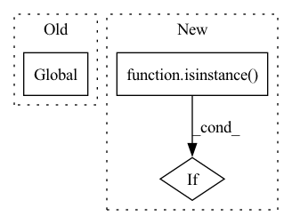

Pattern ID :38164
Before Change
def _set_file(path: str) -> None:
global _FILE_HANDLER // pylint: disable=W0603
if os.path.isfile(path):
backup_name = path + "." + _get_time_str()
shutil.move(path, backup_name)After Change
def _set_file(path: Pathlike) -> None:
if isinstance( path, Path) :
path = path.as_posix()
global _FILE_HANDLER // pylint: disable=W0603
if os.path.isfile(path):In pattern: SUPERPATTERN
Frequency: 3
Non-data size: 3
Instances Fragment ID: 109382353
Project Name: deepdoctection/deepdoctection
Commit Name: 1e8f2f446ba45cf0fad484002783f474bd869a49
Time: 2022-06-09
Author: jm@drjanismeyer.de
File Name: deepdoctection/utils/logger.py
M Class Name: AnonimousClass
N Class Name: AnonimousClass
M Method Name: _set_file(1)
N Method Name: _set_file(1)
M Parent Class:
N Parent Class:
M File Name: deepdoctection/utils/logger.py
N File Name: deepdoctection/utils/logger.py
M Start Line: 85
M End Line: 85
N Start Line: 87
N End Line: 89
Before Change
self._handles = {}
self._colab_img_counter = defaultdict(int)
global _server_services // pylint: disable=global-statement
if port not in _server_services:
_server_services[port] = fos.ServerService(
port, address=address, do_not_track=fo.config.do_not_trackAfter Change
config=None,
):
// Allow `dataset` to be a view
if isinstance( dataset, fov.DatasetView) :
view = dataset
dataset = dataset._root_dataset
Fragment ID: 109382352
Project Name: voxel51/fiftyone
Commit Name: d5c71325eaa75954acdb3c0349a2ac0ca0aee349
Time: 2021-10-13
Author: brimoor@umich.edu
File Name: fiftyone/core/session.py
M Class Name: Session
N Class Name: Session
M Method Name: __init__(11)
N Method Name: __init__(11)
M Parent Class: foc.HasClient
N Parent Class: foc.HasClient
M File Name: fiftyone/core/session.py
N File Name: fiftyone/core/session.py
M Start Line: 307
M End Line: 313
N Start Line: 276
N End Line: 319
Before Change
print(os.environ.get("LOGLEVEL", "INFO").upper())
logging.getLogger("absl").setLevel("WARNING")
logger = logging.getLogger("alpa.opt_serving")
global handler
os.makedirs(LOGDIR, exist_ok=True)
logfile_path = os.path.join(
LOGDIR,
f"alpa.opt_serving.log.{datetime.datetime.now().strftime("%Y-%m-%d-%H:%M:%S")}"After Change
handler.setFormatter(logging.Formatter(formatter))
for name, item in logging.root.manager.loggerDict.items():
if isinstance( item, logging.Logger) :
item.addHandler(handler)
// logger.addHandler(handler)
// Set the webserver logger Fragment ID: 109382354
Project Name: alpa-projects/alpa
Commit Name: f5be87e8baa739dd5c485fee1b21e85c0aa1247d
Time: 2022-07-21
Author: zhisbug@users.noreply.github.com
File Name: examples/opt_serving/service/utils.py
M Class Name: AnonimousClass
N Class Name: AnonimousClass
M Method Name: build_logger(0)
N Method Name: build_logger(0)
M Parent Class:
N Parent Class:
M File Name: examples/opt_serving/service/utils.py
N File Name: examples/opt_serving/service/utils.py
M Start Line: 44
M End Line: 61
N Start Line: 45
N End Line: 76